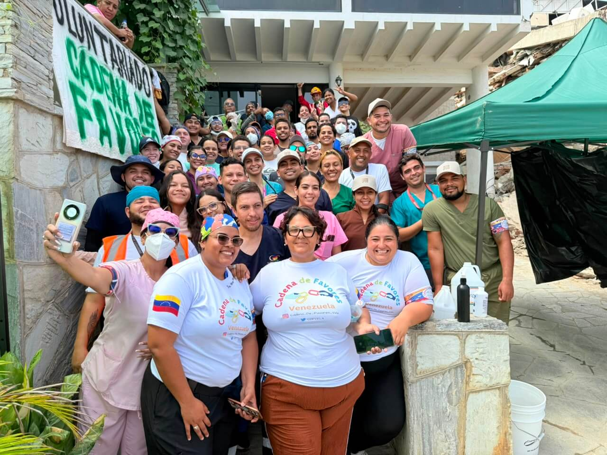

Programa Nutriendo Amor
Abordaje nutricional estratégico dirigido a comunidades vulnerables y niños en situación de riesgo alimentario.
Únete al voluntariado Cadena de Favores Venezuela. Uniendo voluntades y capacidades para brindar apoyo médico pediátrico, asistencia nutricional y voluntariado social a quienes más lo necesitan en Carabobo y todo el país.
Somos una red activa de voluntarios, profesionales y organizaciones comprometidas con la transformación comunitaria en Venezuela. Creemos firmemente en el poder de la acción colectiva para construir puentes de ayuda humanitaria eficientes, directos y transparentes.
+100
Voluntarios ActivosONGs
AliadasJornadas
Realizadas
Programas continuos de impacto social e interviene directa en comunidades
Abordaje nutricional estratégico dirigido a comunidades vulnerables y niños en situación de riesgo alimentario.
Asistencia médica integral a niños de bajos recursos con enfermedades crónicas o condición de salud especial.
Despliegues médico-logísticos comunitarios con entrega de insumos, evaluaciones médicas y atención multidisciplinaria.
Consulta nuestra agenda e inscríbete para acompañarnos en el campo
Consulta el calendario activo de guardias e inscríbete según tu especialidad técnica o médica.
Ver Detalle y PostularmeSúmate como Voluntario o Aliado Institucional
Ingresa con tu correo institucional o personal para gestionar tu perfil o inscribirte a nuevas guardias operativas.